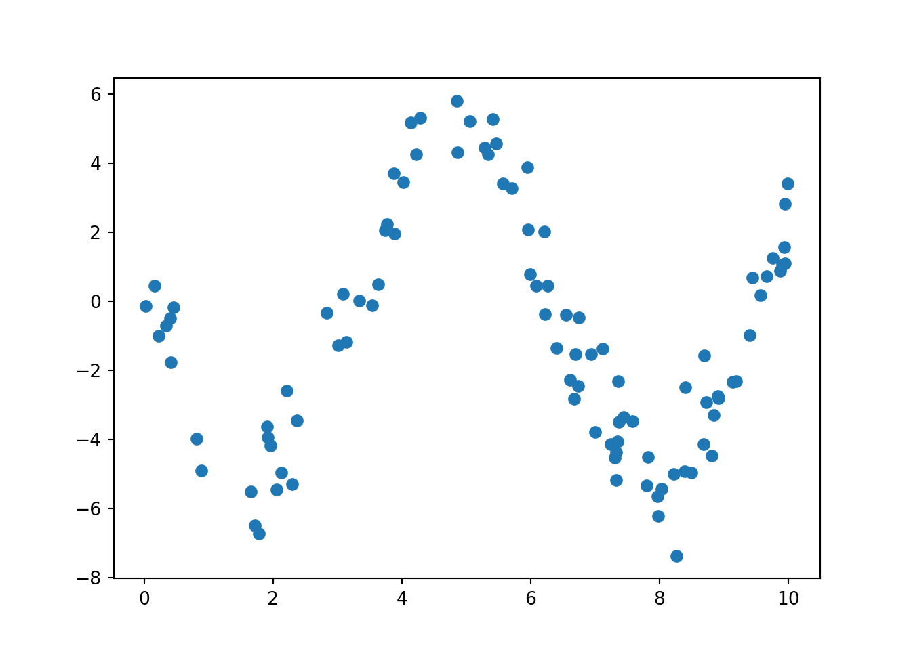
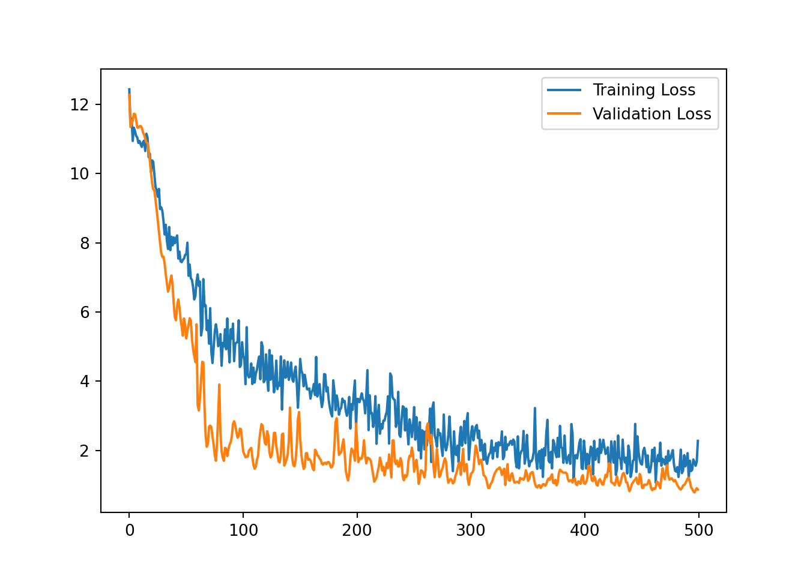
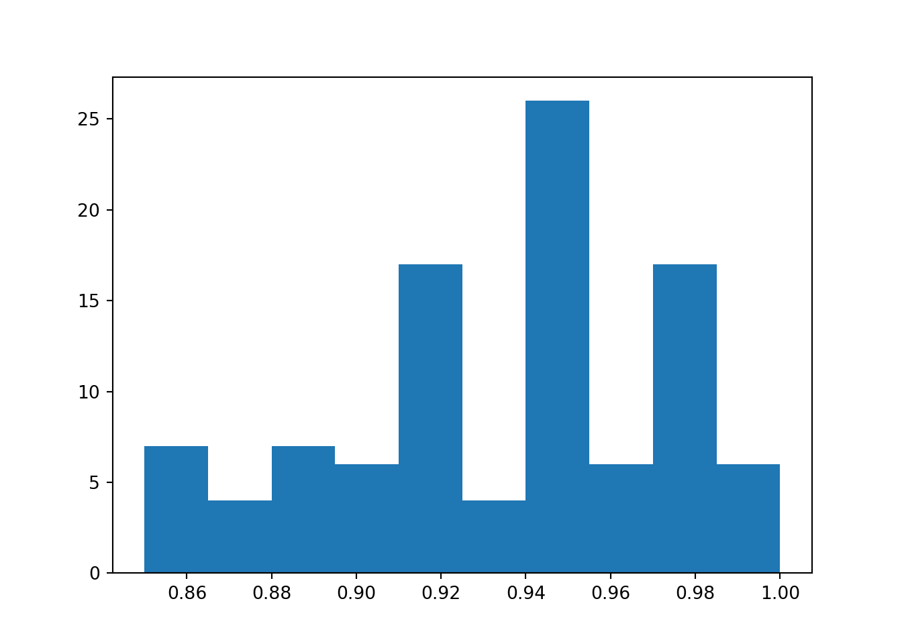

Recently, I have been reading Probabilistic Deep Learning which introduces Bayesian methods for fitting Neural Networks using Tensorflow and Keras. One case study consists of a non-linear regression problem for a sinusoidal curve. Additionally, the curve is considered to have heteroskedastic variance, meaning the variance changes along the domain of the function. In this post I will consider approximating a non-linear function with constant (homoskedastic) variance and quantifying the uncertainty. I will be using PyTorch - because why not.
Uncertainty is an important concept in machine learning, if we have confidence in the predictions of model we are able to make more informed decisions. However, neural networks trained using traditional back-propagation typically return a single point estimate by training to minimise a loss function. There have been many attempts to incorporate uncertainty into neural networks, the most principled way is to fit a Bayesian Neural Network (BNNs) by placing prior distributions on the weights and calculating the posterior distribution using Bayes’ theorem:
Where \(\theta\) represents the parameters in the neural network, ie. the weights and biases. \(p(\theta)\) is the prior distribution, and \(p(y|\theta)\) is the likelihood. These can all be specified. However, calculating the evidence, the denominator in the equation, \(\int_\theta p(y|\theta)p(\theta)\) is intractable analytically in most real-world problems, including BNNs. The gold standard for computing these integrals for real-world problems is MCMC. In the case of modern deep learning models, the parameter space is too high dimensional (ie. there are too many parameters!) for these methods to be computationally feasible (although (Izmailov et al. 2021) did use HMC for fitting NNs to the CIFAR-10 image dataset and IMDB review dataset using 512 TPUv3 devices). Hence, we look to approximate methods, such as variational inference, which can place additional assumptions on the form on the prior and posterior distributions. There are also non-Bayesian methods (such as deep ensembles) which can be evaluated to have desirable properties such as calibration. From the Wikipedia for statistical calibration “As Philip Dawid puts it,”a forecaster is well calibrated if, for example, of those events to which he assigns a probability 30 percent, the long-run proportion that actually occurs turns out to be 30 percent”.”
In this post we will investigate a single easy to implement method for uncertainty estimation, MC dropout (Gal and Ghahramani 2016), applied to a regression problem.
Let’s start by creating simulating data from a simple model:
import numpy as npimport matplotlib.pyplot as pltdef generate_data(xs): a =5 b =3 mean =lambda x: a * np.sin(x + b) data = [(x, np.random.normal(loc=mean(x), scale=1, size=1))for x in xs] x, y =zip(*data)return np.array(x), np.array(y)xs = np.random.uniform(0, 10, size=100)x, y = generate_data(xs)plt.scatter(x, y)

Create a neural net which can learn the non-linear function. We’ll use the class nn.ModuleList to allow us to experiment with different numbers of hidden layers. According to the MC Dropout paper, we must apply dropout to each layer in order for the procedure to be equivalent to variational inference - under a set of assumptions.
import torch.nn as nnimport torchimport torch.nn.functional as Fclass NonLinearRegression(nn.Module):def__init__(self, dropout, hidden_size, hidden_layers):super(NonLinearRegression, self).__init__()self.input= nn.Linear(1, hidden_size)self.dropout = nn.Dropout(dropout)self.linears = nn.ModuleList( [nn.Linear(hidden_size, hidden_size) for i inrange(hidden_layers)])self.dropouts = nn.ModuleList( [nn.Dropout(dropout) for i inrange(hidden_layers)])self.output = nn.Linear(hidden_size, 1)def forward(self, x): x =self.input(x) x = F.relu(x) x =self.dropout(x)for l, d inzip(self.linears, self.dropouts): x = l(x) x = F.relu(x) x = d(x) x =self.output(x)return x
Split the data randomly into training and testing.
from sklearn.model_selection import train_test_splitx_train, x_test, y_train, y_test = train_test_split(np.array(list(x)), np.array(list(y)))
Test the untrained model input and output shapes by making a prediction using the training data.
model = NonLinearRegression(0.5, 32, 1)x_input = torch.tensor(x_train, dtype=torch.float).unsqueeze(-1)model(x_input).shape
torch.Size([75, 1])
Use Skorch to avoid writing the training boilerplate. Use the .fit method provided by Skorch.
We can visualise the learning curve for this model below.

We can see in the figure below that the predictions are in the right region, but using only a point prediction we miss out on capturing the uncertainty.
We can represent the aleatoric uncertainty, ie. the uncertainty inherent in the data using a Normal distribution. We know the observation distribution of the data generating process is Normal with a standard deviation (called scale in PyTorch) of 1.0. We can learn this additional parameter using PyTorch, to do this we can introduce a new loss function and alter the forward function of the Neural Network module to include the standard deviation parameter. First we’ll consider how to write the new loss function, we need to calculate the log-likelihood of the observations then we wish to maximise this. Neural networks in PyTorch have optimisers with minimise the loss function, hence we will minimise the negative log-likelihood. Let’s first consider the probability density function of a Normal distribution with mean \(\mu \in \mathbb{R}\) and standard deviation \(\sigma \in \mathbb{R}^+\):
We have multiple observations which are independent and normally distributed, hence for each batch we will need to calculate the product of the likelihood:
Where \(B\) is the batch size, this involves multiplying small numbers together which can result in arithmetic underflow, hence we work on the log-scale which changes the calculation to addition:
In the case of the Neural net, \(\mu\) is the output and \(\sigma\) is an additional parameter. We can code the log-likelihood by converting this function into PyTorch or using the build in distributions.
from torch.distributions import Normalimport mathnormal_model = NonLinearRegression(0.1, 64, 3)inputs = model(x_input)labels = torch.tensor(y_train, dtype=torch.float)mu = inputslog_sigma = torch.tensor(0.0, dtype=torch.float)# Calculate manuallymanual_ll =-0.5* math.log(2.0* math.pi) -\ log_sigma -0.5* ((labels - mu) / log_sigma.exp()) **2# Use the built in log_prob functionlog_likelihood = Normal(mu, log_sigma.exp()).log_prob(labels)log_likelihood.sum(), manual_ll.sum()
We can modify the nn.Module to return an additional parameter representing the log of the standard deviation of the Normal distribution. Additionally, the forward model will return the predicted mean and the global standard deviation - this is necessary when using Skorch, since the standard form of the loss function is def loss(y_pred, y_true).
import torch.nn as nnimport torchimport torch.nn.functional as Fclass NonLinearRegressionNormal(nn.Module):def__init__(self, dropout, hidden_size, hidden_layers):super(NonLinearRegressionNormal, self).__init__()self.input= nn.Linear(1, hidden_size)self.dropout = nn.Dropout(dropout)self.linears = nn.ModuleList( [nn.Linear(hidden_size, hidden_size) for i inrange(hidden_layers)])self.dropouts = nn.ModuleList( [nn.Dropout(dropout) for i inrange(hidden_layers)])self.output = nn.Linear(hidden_size, 1)self.log_sigma = nn.Parameter(torch.tensor(1.0))def forward(self, x): x =self.input(x) x = F.relu(x) x =self.dropout(x)for l, d inzip(self.linears, self.dropouts): x = l(x) x = F.relu(x) x = d(x) x =self.output(x)return x, self.log_sigma
The standard deviation, sigma, is constant, so in a custom training loop (not using skorch) we could simply pass the model definition to the loss function directly and extract the sigma parameter as follows. This would mean the forward function of the nn.Module can remain the same as the first model. The loss function could look like the following:
Then calculate some predictions, the actual function is plotted using blue, with the predictions and prediction interval plotted in red. This is an MLE solution with a 95% confidence interval.
Uncertainty with MC Dropout
We have looked at how to incorporate aleatoric uncertainty, to understand the uncertainty in the parameters (epistemic uncertainty) we can use MC Dropout. Dropout is a method of avoiding overfitting at training time by removing “connections” in a neural network. However, if we leave dropout on when making predictions, then we create an ensemble of models which output slightly different predictions. It turns out that this is equivalent Bayesian variational inference with some assumptions. We can then calculate the mean and and uncertainty intervals we wish.
We can easily implement MC dropout and visualise the uncertainty provided with this method. First, we extract the module from the Skorch NeuralNet class and put it in train mode, this means we make predictions with dropout ON.
Let’s write a convenience function for making multiple predictions and combining them into a single numpy array.
def get_predictions(model, x, n):# Make multiple predictions mus, sigmas =zip(*[model(x) for _ inrange(n)])# Sample from the observation distribution using each mean and the global sigmareturn [Normal(mu, log_sigma.exp()).sample().detach().numpy() for mu inlist(mus)]
We then have a collection of predictions which we can use to calculate summaries using monte carlo. We can calculate the expectation by calculating the mean of all the predictions, and probability intervals by ordering the predictions and selecting the appropriate values, using np.quantile.
Next, we can use the same method to predict several points and give the impression of a function. If we extend the \(\sin\) function we can see that the uncertainty on the inputs which are out of the domain of the training examples is quite large. We can evaluate the calibration of these intervals in domain and out of domain by creating a new training split which omits data in a certain interval.
We can calculate the coverage of the probability interval using an experiment. We first train a neural network generating data from the same noisy function. We have \(\mu = 5\sin(x + 3)\) and the observations corrupted by Gaussian noise, \(y_i \sim \mathcal{N}(\mu, 1^2)\). Then we sample 100 random uniform test points between 0 and 10 and make probabilistic predictions by calculating 1,000 predictions using MC Dropout and calculating 95% probability intervals. This should account for epistemic uncertainty in the parameters and aleatoric uncertainty inherent in the observed data. We then calculate the proportion of predictions which fall into the interval, this should be close to 95%.
def coverage_experiment():# Generate training data x_train = np.linspace(0, 10, 50) _, y_train = generate_data(x_train)# Fit model to training data x_train_input = torch.tensor(x_train, dtype=torch.float).unsqueeze(-1) net_normal.fit(x_train_input, torch.tensor(y_train, dtype=torch.float))# Generate testing data from the same generative model n_test =100 x_test = np.random.uniform(0, 10, n_test) _, y_test = generate_data(x_test) net_normal.module_.train()# Calculate predictions on test data preds = get_predictions( net_normal.module_, torch.tensor(x_test, dtype=torch.float).unsqueeze(-1),1000) lower, mean, upper = get_probability_interval(preds, 0.95)# Calculate proportion of predictions which fall into interval in_interval =sum([l <= y <= u for y, l, u inzip(y_test, lower, upper)])return in_interval / n_test
Let’s repeat this experiment 100 times and plot a histogram of the resulting coverage.

References
Gal, Yarin, and Zoubin Ghahramani. 2016. “Dropout as a Bayesian Approximation: Representing Model Uncertainty in Deep Learning.” In International Conference on Machine Learning, 1050–59. PMLR.
Izmailov, Pavel, Sharad Vikram, Matthew D Hoffman, and Andrew Gordon Wilson. 2021. “What Are Bayesian Neural Network Posteriors Really Like?”arXiv Preprint arXiv:2104.14421.
Citation
BibTeX citation:
@online{law2021,
author = {Jonny Law},
title = {Uncertainty in {Neural} {Networks}},
date = {2021-08-16},
langid = {en}
}
For attribution, please cite this work as:
Jonny Law. 2021. “Uncertainty in Neural Networks.” August
16, 2021.
![]()